I start with the decision
Before I build anything, I ask two questions: what decision will this number help someone make, and who will act on that decision?
Technical Program Manager
I define the metrics, align the teams that own the data, and build the reporting and AI workflows that leaders use to decide.
I have nearly 5 years of experience across program management, engineering and product, including internships. At Microsoft, I define the metrics for Azure cloud reliability, align partner teams on them, and build the reporting leaders use. Before that, at Jio Platforms, I led feature planning and release validation for consumer commerce apps.
My core depth is Azure data platforms, reliability reporting and cross-org program execution, with hands-on SQL, KQL and Power BI work.
If you bring me a reporting problem, a cross-team program or a data question, this is how I'll approach it.
What should we measure, and which decision will it support?
What does the number mean, and who owns it?
Can people trust the result, and what happens when it's wrong?
Before I build anything, I ask two questions: what decision will this number help someone make, and who will act on that decision?
When stakeholders need different things, I put their requirements side by side and design for all of them, so conflicts surface early instead of becoming rework later.
I test a small version with real users before scaling it up, and I say clearly what isn't ready yet.
Every dashboard, pipeline and definition gets an owner, documentation and monitoring, so it doesn't depend on me.
I author reusable Copilot skills: structured, reviewable workflows that gather context, use approved tools and data, do the arithmetic in code and leave the final call to a person.

I designed a reliability check-in skill for monthly reviews. It gathers context first, retrieves data through approved connection paths (the Model Context Protocol (MCP) and software development kits (SDKs), the standard ways for AI tools to reach data), calculates metric comparisons in code, and drafts a narrative where every claim links to its source. A reviewer approves each draft before use.
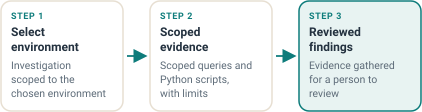
I developed log-investigation workflows that collect evidence from the selected environment using scoped queries and Python scripts with defined limits.
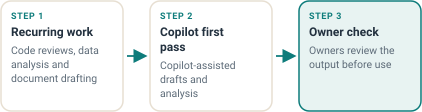
I introduced Copilot-assisted workflows for code review, data analysis and document drafting, cutting manual preparation in recurring work. Owners check the output before they use it. I also explored Copilot Studio for agent use cases.
Filter by the kind of role you're hiring for. Figures come from my own records and internal reviews.
Note: Visuals are sanitized architectural reconstructions using placeholder data to protect confidential employer details.
The carousel loops and rotates on its own. Swipe or use the arrows, or pause it.
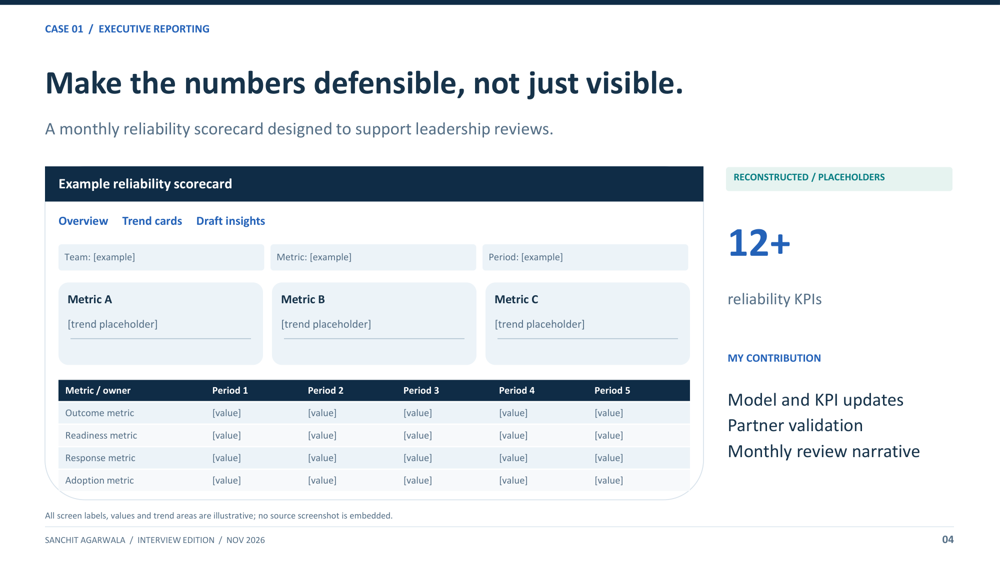
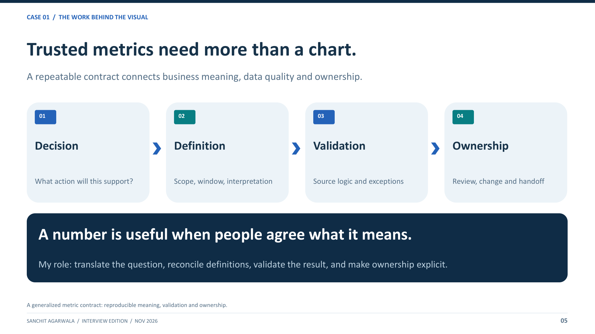

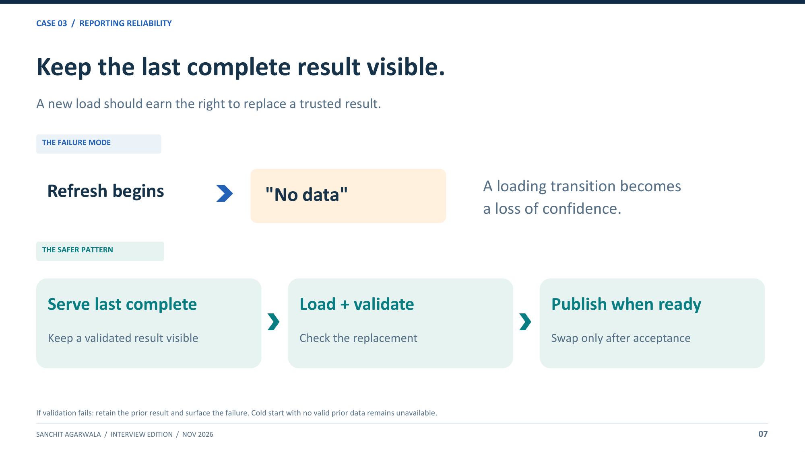

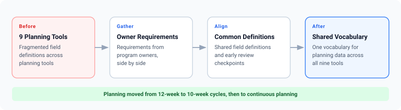

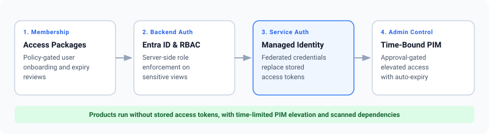
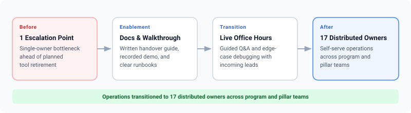


Client consulting, analytics projects and published research. Swipe or use the arrows to browse.
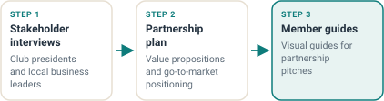
Led a 10-month consulting engagement for Rotary: a plan for clubs to partner with local businesses, built on stakeholder interviews with club presidents and business leaders.
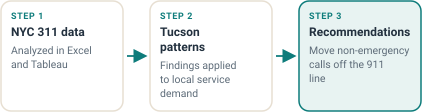
Analyzed NYC 311 service data in Excel and Tableau and made recommendations to the Tucson Police Department: a redesigned 311 architecture for Tucson, including non-emergency call types that could move off the 911 line.
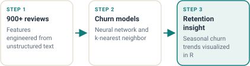
Engineered features from 900+ unstructured restaurant reviews, built neural network and k-nearest neighbor (KNN) models to forecast churn, and visualized seasonal retention trends in R.
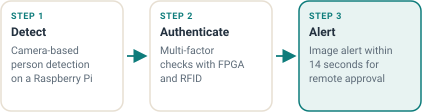
Built a smart locker with multi-factor authentication (field-programmable gate array (FPGA) and radio-frequency identification (RFID)) and Internet of Things (IoT) alerts. Computer vision and a Raspberry Pi flag unauthorized users within 14 seconds and send image alerts for remote approval or denial. Published on the Social Science Research Network (SSRN).
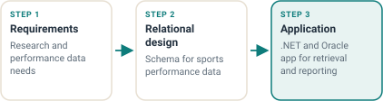
Gathered requirements and designed a relational system for a football association's research and performance data, then built a full-stack .NET and Oracle application for retrieval and reporting.
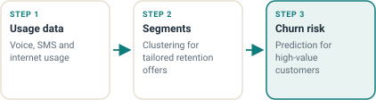
Analyzed voice, text message (SMS) and internet usage across large telecom datasets, clustered customers for tailored retention offers, and predicted churn for high-value customers.
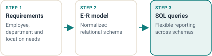
Designed a company database, from entity-relationship (E-R) diagrams to a normalized relational schema, with SQL queries.
Each card flips to show its validation link.
The fastest way to reach me is LinkedIn. I'm happy to talk about technical program management, reliability reporting, data platforms or applied AI.